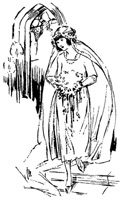
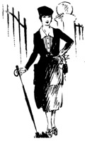

1926—The New-Way Course in Fashionable Clothes-Making
Introduction to Lesson 33
Correct Clothes for Every Occasion
To wear beautiful, becoming clothes is not enough. To wear clothes that are an expression of one's individuality is not enough. There is something that is more important than fashion, attractiveness, personality—something more significant than any or all of these.
You would not expect the man of good taste and judgment to attend a formal dinner in street clothes, would you? Nor would you expect a young woman to wear her shopping dress to the dance. Clothes are governed by the occasion—and if one would be considered a person of good taste, one must heed carefully the dictates of correct dress.
There are certain "unwritten laws" governing the clothes worn at a wedding. Mourning, for instance, is considered a breach of good form—an indicating that the person is lacking in good taste. For that reason, people in mourning are not expected to accepted wedding invitations. Similarly, there is definite, correct dress for the dance, the tea, the dinner, the theatre—every occasion of everyday life.
And so we find that in addition to our knowledge of fabrics, design, the creating of clothes and the conforming to certain individual types, there is also the important question of correct clothes for every occasion. Without his knowledge, one cannot truly be called an expert modiste—a fashionable creator of beautiful clothes. It is not for oneself alone that the knowledge is important; but if the clothes-maker ever makes clothes for others, she must know what principles to embody in the evening gown, how the tea gown should be made, what type of dress is appropriate for street or theatre wear.
It is really a study in itself—this consideration of correct dress. We know you will find it fascinating. By telling you exactly what to wear to the wedding, dance, theatre-party or dinner, it increases your poise, your self-confidence. It will enable you to avoid embarrassing inconsistencies in dress—and show you the way to be always, at all times, dressed in accordance with the requirements of the occasions well as the requirements of fashion.
The Wedding Gown—and Trousseau
There is a certain fascination in making a wedding gown, in planning a trousseau, in creating dainty, much-beribboned wedding things. Let us first have a little chat about the trousseau and find out just what is correct for this all-important occasion.
Of course, when we think of a trousseau we think quite naturally of billows of creamy white linens, of exquisite under-things, of beautiful embroideries. But these items must be dependent entirely upon the individual—upon the extent of one's purse and the demands of one's taste. What we are chiefly interested in is the wedding gown itself. How shall it be made? What shall the material be?
White is the color for brides. Since time immemorial this has been the color used to denote purity. The exclusive use of white for brides is supposed to have grown out of an old custom of the ancient Patagonians who covered the body with white paint on the eve of the wedding ceremony. The material used may be heavy crepe de chine, white brocade or satin—preference being given the latter.
As for style, always remember that the greatest charm of the bridal gown lies in its simplicity. A gown that is elaborate defeats its own purpose, and is an indication of poor taste. The occasion is a solemn and dignified one—and the gown should be made extremely simple to harmonize with the occasion.
Most wedding gowns are made with a train and the skirt is almost always draped. For evening weddings, the gown may be sleeveless. The veil may be either of tulle or lace.
But what should the trousseau contain, you persist? To list the articles that should be included in the trousseau would be as ridiculous as it is impractical—for this is a matter which is entirely dependent upon convenience, circumstances and personal preferences. We can only make suggestions which may be followed as one thinks best.
There is something strangely beautiful in the thought of making one's trousseau. Indeed, there is an old tradition to the effect that the bride who makes her own trousseau "sews happiness into the wedding outfit." The garments included in the trousseau should be sensible, useful things. Everything useless and merely ornamental should be omitted. Undergarments should be made, with a regard for wear and utility. Linens should have deep hems finished with neat hemstitching instead of flimsy laces or embroideries. Household and personal linens should be embroidered in the bride's maiden initials.
If a honeymoon trip is planned, the trousseau should contain at least one smart dress of serge or poiret twill for street wear; an afternoon frock or two of georgette crepe, satin or taffeta; an evening gown for the important occasions; a semi-evening dress conservative in style; a dark-colored suit with several gay little blouses. However, these are merely suggestions and may be followed as one sees fit.
What to Wear to the Wedding
Now let us see what the wedding guest is expected to wear. Surely, one does not wish to draw attention to oneself by being incorrectly dressed at so important an occasion as a wedding?
If the wedding is held in the morning or afternoon, the gown should be of satin, georgette or taffeta. Some of the newest modes favor lace. Sleeves should be elbow-length or full-length. The style of dress depends upon the figure of the person and upon the prevailing fashion. Elderly women should select dark blue or brown, but for the younger women the lighter shades are preferred for the early wedding.
Then there is the evening wedding, resplendent with the colorful gowns of fashionable women. Here one wears one's "best"—for the evening wedding is considered formal. Elaborate decollete is usually worn if the wedding is held at church, although one need not be so formal for a small home wedding. The style of the dress may be either bouffant or straight-line, according to the requirements of the individual figure. Only the finest silk materials are used for evening gowns.
Because it is a beautiful occasion, one is expected to wear beautiful clothes to the wedding. By beautiful clothes we do not mean elaborate clothes, necessarily—but clothes that are well-made, well-finished and with just enough charm and artistry in their construction to do justice to the solemn dignity of the occasion.
Dinner Dress
The regard for correct dinner dress is more marked in the city than it is in the country. City life has a certain strict formality which is entirely lacking in the country, yet which on invariably finds at such important country occasions as church festivals, subscription dances and dinners given in honor of celebrated guests.
The woman who receives formal dinner invitations, should have at least one evening dress in her wardrobe. If she is tall and slender, she should choose a bouffant style—and it may be made of a soft, clinging material or taffeta if one prefers. Of course, one would not wear an evening gown of this kind to a chummy little dinner where all are the closest friends, but only to pretentious, formal affairs where everyone appears in "full dress."
If one is inclined to be the least bit stout or short, the slender silhouette should be chosen. It must be developed of a soft material, such as satin, silk brocade or any other soft, silken material. Lace is appropriate, also. This type of gown should be made with long lines and straight panels.
In selecting materials and colors for evening gowns, one should bear in mind the requirements of the individual, as taught in an earlier lesson in the course. Absolute harmony between the gown and the personality of the wearer is essential. For the older woman, we suggest jet; for the younger woman gold lace or gold tissue. The gown should have a train only when it is extremely simple in design; an elaborate gown because gaudy when a train is added to it.
Clothes for Tea-time
Both in France and America, tea-time is considered the most fashionable time of the day. It makes no difference whether the tea be formal or informal—one is expected to wear one's prettiest and most becoming frock. In summer, one wears delicate, dainty frocks of light, gay-colored materials. In winter one wears frocks no white less pretty, but heavier and more substantial in the weight of material.
One of the most favored materials for the afternoon frock—which is also the tea-time frock—today is satin. Chiffon, crepe de chine, georgette—or a combination of any two of these—are also favored. Colors vary from the deepest tones of brown to the brightest shades of green. As fashion is almost always in a colorful mood, you should have no trouble ins electing and combining colors that are individually becoming, and at the same time appropriate.
The young girl who goes a-teaing should wear a dress made simply of soft folds of the material, finished with a huge sash and bow of tulle or chiffon. When one is older, the dress may be beaded georgette or embroidered satin—as is most becoming.
If the tea is given in honor of one's debutante daughter, she should wear a gown that is at once simple and dainty, cut quite low in the neck and boasting tiny sleeves. It is most becoming if it is of georgette in a very pale pastel shade.
Lawn Parties and Garden Fetes
Just as one expects flowers in the spring-time, so does one expect frivolous little frocks at the lawn party or garden fete. Nothing less than a gay little summer frock, a parasol to match and a flower-trimmed hat will harmonize with the garden or lawn background.
For the garden-party frock, there can be no material more ideally suited than crisp organdie. And this is especially true when the color of that organdie is orchid or Nile green. The dress may be as simply or elaborately styled as one pleases, but one particularly pretty little frock we have in mind was trimmed solely with a profusion of tiny pin-tucks on the skirt and around the neck. Silk floss embroidery added a touch on contrasting blue (the dress was of orchid) and the silk cord girdle was of blue to match.
Of course, this would not be an appropriate dress for the older woman. For her, we suggest a dress of dotted Swiss, crepe or French lawn. The color should be light, but the style simple. Sunset yellow has, somehow, the propensity of being attractive both to youth and age; lilac is ideal for the older woman; black should never be worn to a garden party or fete. Styles may be simple, but colors should always be as gay and rich as the colors from Nature's very own palette.
Dance Dress
One does not attend dances unless one wishes to put oneself into the spirit of the dance and respond to the rhythmic cadences of the music. To be appropriate, one's dress must be in accord with the occasion—and to be in accord with this gay, happy occasion one's clothes must be bright-colored and attractive.
When the dance is held in the afternoon, the young person should perhaps wear a gown of organdie or taffeta, extremely youthful in style, for dancing and youth go hand-in-hand, you know! The gown may be a combination of colors or just one pale pastel shade. It should be trimmed gaily with flowers or ribbon.
For the older woman, it will be necessary to select a gown more suited to her years. Canton crepe, crepe de chine and satin are widely in vogue, and trimmings are usually gay in note—although the style of the dress may be somber to match one's tastes. Navy blue taffeta trimmed with silver cloth is ideal for the older woman at the dance.
The evening dance assumes the more pretentious and dignified name of "ball." Clothes, to be appropriate, are therefore more elaborate. One may wear one's most elaborate evening gown, if one is older. For the very young person the lines should be bouffant and youthful; a pretty frock would be of soft green or soft rose chiffon velvet trimmed with bands of silver ribbon. It may be sleeveless or with tiny sleeves.
The young miss who is introduced for the first time to society at a ball should wear a gown either of white or a delicately tinted shade. The most popular materials are tulle, net, chiffon or silk georgette. The neck is often cut in a heart-shape and the dress usually has tiny sleeves.
Dress at the Theatre
There is a very discouraging tendency to over-dress at the theatre. The place for gay dress is in the ball-room or at the formal dinner—not at the theatre.
When you attend the matinee wear a simple street dress of dark material. During the summer months, daintier fabrics and lighter colors are permissible. Avoid ostentation and gaudiness; dress that is worn in public should always be simple.
Evening dress is worn to the theatre when one sits in a box. This evening dress should not be as elaborate or as decollete as the dress worn to the formal dinner or dance. Those who site in the orchestra may wear full or semi-evening dress as they desire—but those occupying the less expensive seats should wear plain street clothes.
The very same principles of correct dress that apply to the theatre apply to the opera too.
Street Clothes
As for walking or shopping, there can be nothing more appropriate than a smart, tailored suit worn with a neat blouse of French voile or batiste. The woman of good taste is never conspicuous, never gaudy. Her clothes are always well-made and fashionable, and they are always appropriate to the occasion when they are worn.
Dressing for Church
It is absurd to dress gaily when one goes to worship in the solemn sacredness of the church. Yet how many people do we see in bright-colored, extremely-styled clothes! Here is one occasion where incorrect dress reveals forcibly the lack of good taste and judgment of the wearer.
To be entirely in accord with one's mood at church, clothes must be sombre, quietly and inconspicuously styled. In summer, a simple dress of crepe de chine, untrimmed save for soft folds of the material, is most appropriate. White is splendid for summer wear at church for it is cool enough for the summer warmth and simple enough to do justice to the solemn occasion.
Gowns of velvet, satin or georgette may be worn to church in the winter. But they may not be the least bit elaborate. A bit of embroidery or beading is permissable, but anything elaborate is in bad taste. Gloves should always be worn.
When One is Mourning
Mourning is worn as a sign of reverence and as an expression of sorrow. To mourn for some beloved one, we relinquish pleasures for a stated time—and one of these pleasures is fancy clothes.
A neat, simple frock of black is usually worn. No trimmings whatever, not a touch of color. All black and severely simple in style. Widows wear long crepe veils falling almost to their knees. No jewelry is worn except a dull jet pin if one wishes it. After a year, the widow may wear white or lilac combined with the black, but it is not considered correct to return to bright colors until after a period of two years has elapsed.
The Business Woman
Women in business should be extremely conservative in dress, wearing clothes with simple good taste. The well-dressed business woman gives the appearance of being well-dressed without anyone stopping to think what she is wearing. There is nothing gaudy or attractive in her attire.
However, the business woman need not confine herself to severely tailored suits and high-necked blouses. She may express her art and taste in clothes just as freely as the woman whose clothes are judged from the social viewpoint. Indeed, she has the opportunity of showing even better taste than any other women—for in business she has the opportunity of combining common-sense with correct fashion. In making style selections, the business woman should avoid all "fads." She should never select the type of garment that will probably be worn a month or two, and then discarded as hopelessly out-of-date. Anything extreme is in bad taste. Ostentation of any kind, gaudiness and elaborate attire are detrimental to the ultimate success of the woman in business.
The woman who wishes to be strictly tailored, should wear a smart suite of English tweed. Heather is a good color as is also a grey or brown mixture. Suits of this kind should be worn only with plain white voile or white batiste blouses such as was made in the previous book.
Dresses for the business woman should be dark-colored and simply-styled. One-piece dress are ideal and every business woman should have at least two. With dresses of this type a small toque or turban should be worn, black or tan shoes, or oxfords, and a very plain but smartly styled coat.
Women everywhere are realizing more and more the value of correct dress for every occasion. We no longer see women in silk frocks on the golf links—but women who wear smart golf suits entirely suited to the occasion. we no longer see women shopping in satins and furs as they used to in the cities—but in sensible, inconspicuous clothes appropriate to the last detail. Instead of slavishly following a stupid mode, women are using their own taste and intelligence—and the result is better dressed women everywhere in the social and business life.
In the following lessons, you are going to learn how to make tailored clothes. This type of clothes is appropriate for business wear and sport wear. Whenever you plan a new dress or blouse, whenever you decide upon a new suit or a new skirt, know even before you start just what occasions you want the new garment for—and make it accordingly. If you want a ball dress, a wedding gown, a business dress—refer back to this lesson and be sure that you, as a fashionable modiste (for that is what you will be when you have mastered the course!) do not commit any inconsistencies in dress.